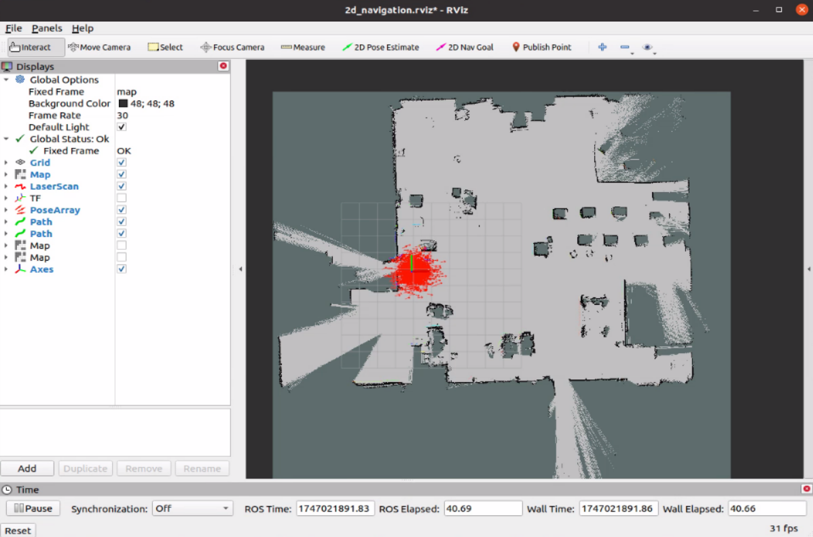
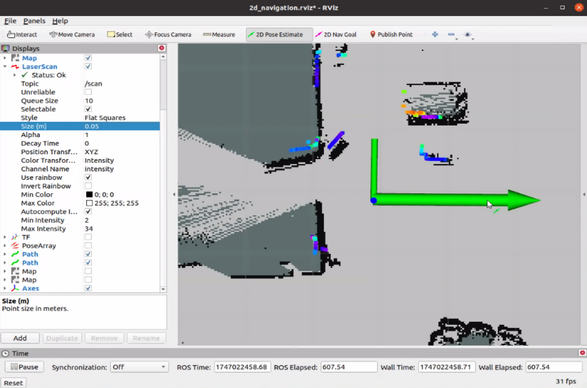
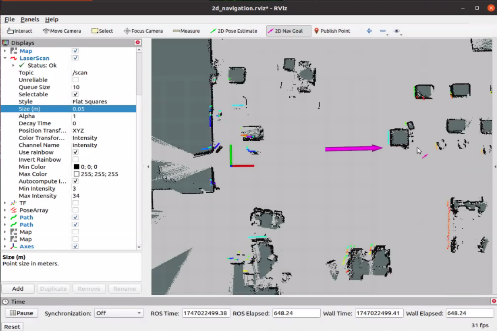

🧭 2D LiDAR Navigation
Once the chassis, LiDAR, and IMU drivers are running and a valid 2D LiDAR map has been saved, you can activate the 2D navigation function.
This system uses the open-source move_base package and includes the following key components:
- AMCL for localization
- Dijkstra for global path planning
- TEB for local trajectory generation and obstacle avoidance
🚀 Launch Navigation Stack
Run the following command in a new terminal:
roslaunch robot_start 2d_navigation.launch
This will initialize the move_base stack and all related navigation components.

🖱️ Set Initial Pose in RViz
- Open RViz
- Click the
2D Pose Estimatetool - Click and drag on the map to indicate the robot's current location and heading
- Make sure the LiDAR scan (point cloud) aligns well with nearby map features

🎯 Set Navigation Goal
- Click the
2D Nav Goaltool in RViz - Click and drag to specify the desired goal location and heading
- The robot will begin moving toward the goal, avoiding obstacles automatically

📊 Observe Path Planning
While navigating, you’ll see: - Planned path overlaid on the map - Red arrows indicating pose updates and stability - Dynamic costmaps adjusting to obstacles
These visualizations help verify that navigation is proceeding correctly.
⚙️ Configuration Files
Navigation parameters are stored in:
~/catkin_ws/src/robot_start/param/
| File Name | Description |
|---|---|
costmap_common_params.yaml |
Shared costmap settings |
global_planner_params.yaml |
Global path planner settings (e.g. Dijkstra) |
local_costmap_params.yaml |
Settings for the local costmap |
move_base_params.yaml |
Recovery behavior and controller configs |
teb_local_planner.yaml |
TEB-specific planning parameters |
dwa_local_planner.yaml |
Alternative local planner settings (DWA) |
💡 Tweak these parameters to improve navigation quality for different environments or behaviors.
Once the robot reaches the goal, you can reissue new navigation targets or adjust maps and configurations as needed.